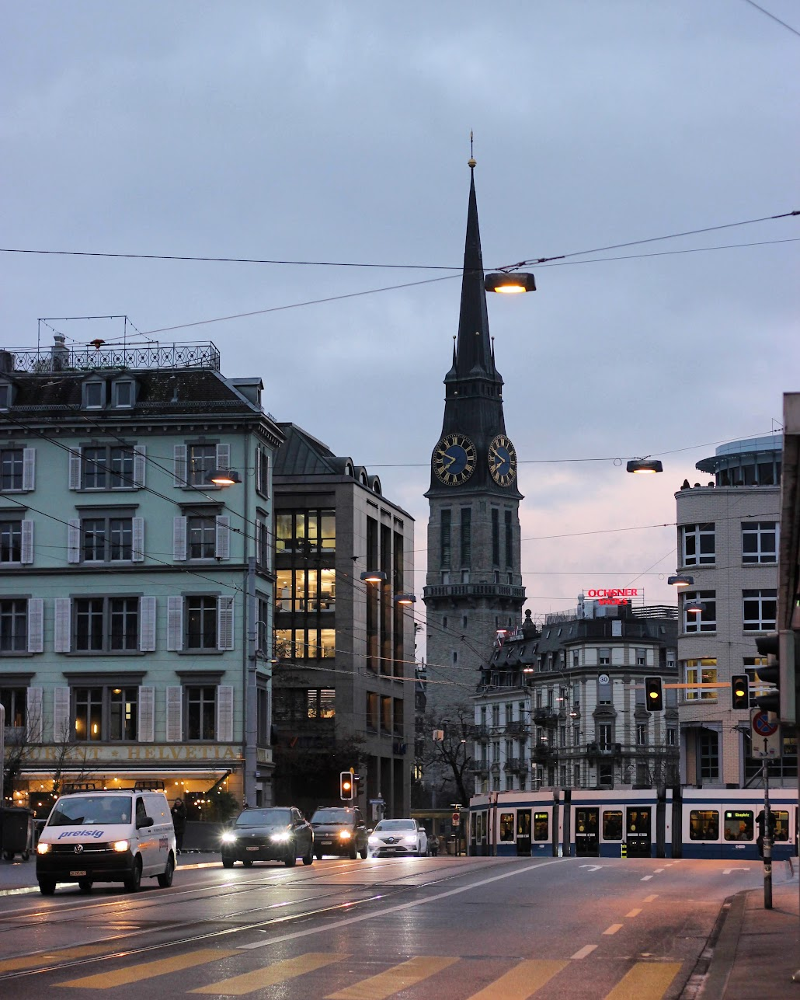
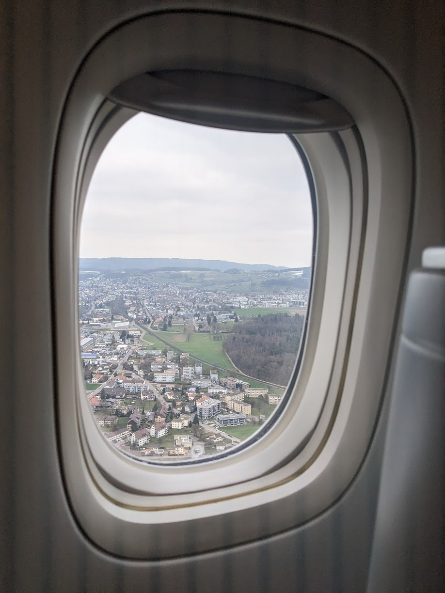
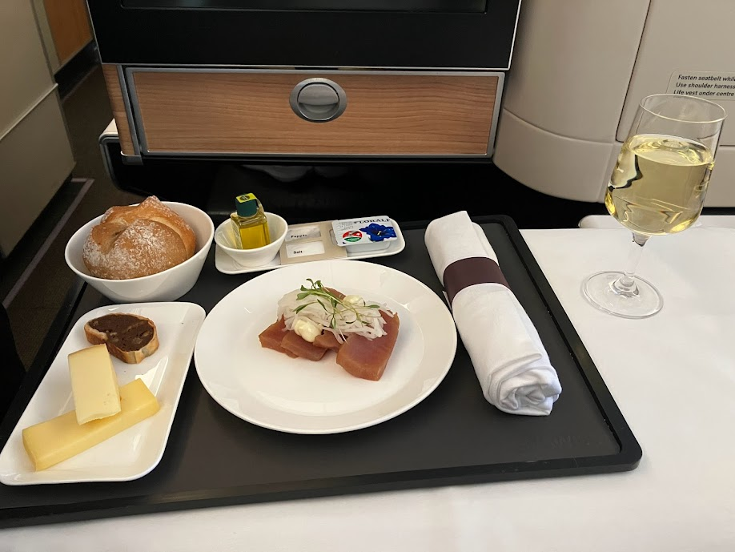
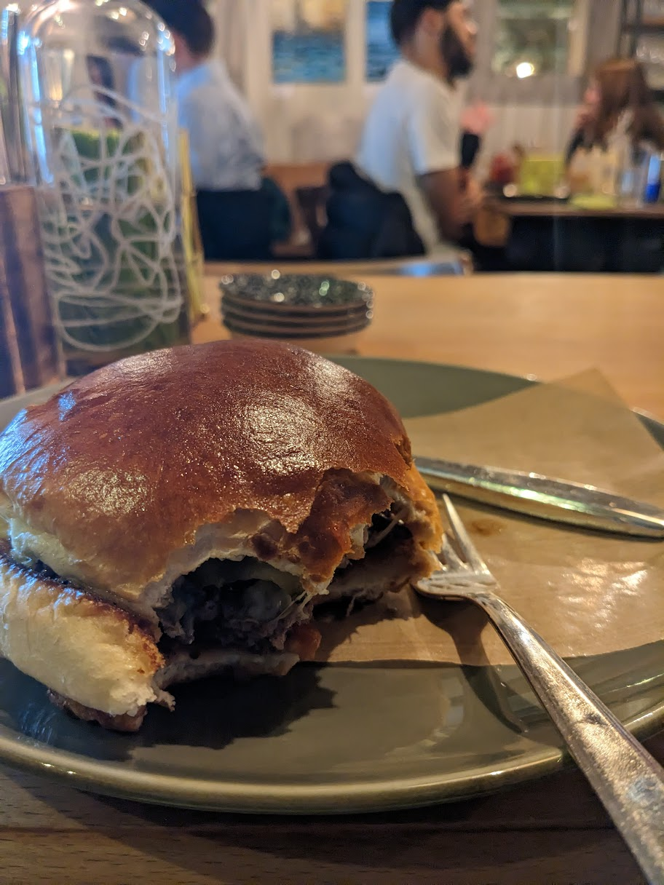
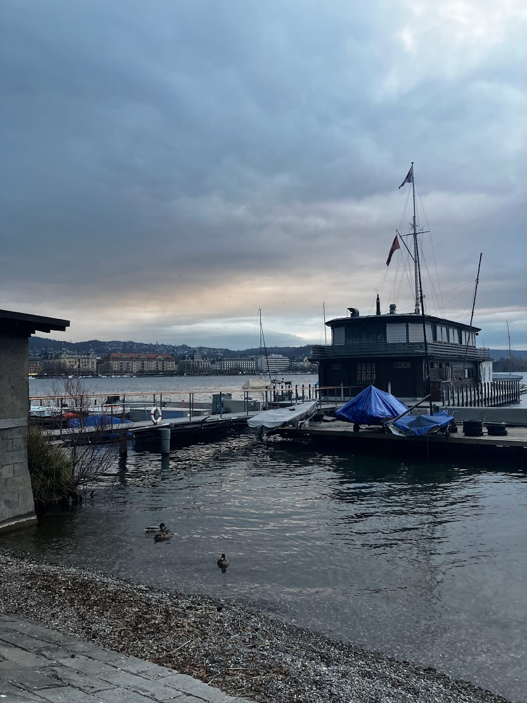
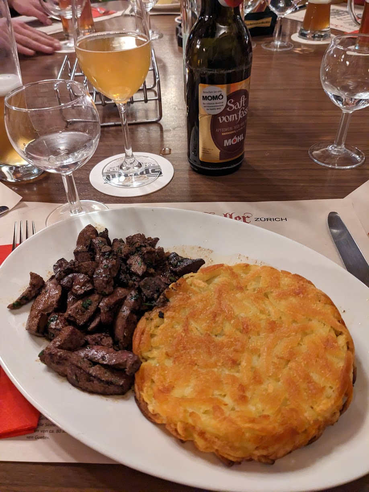
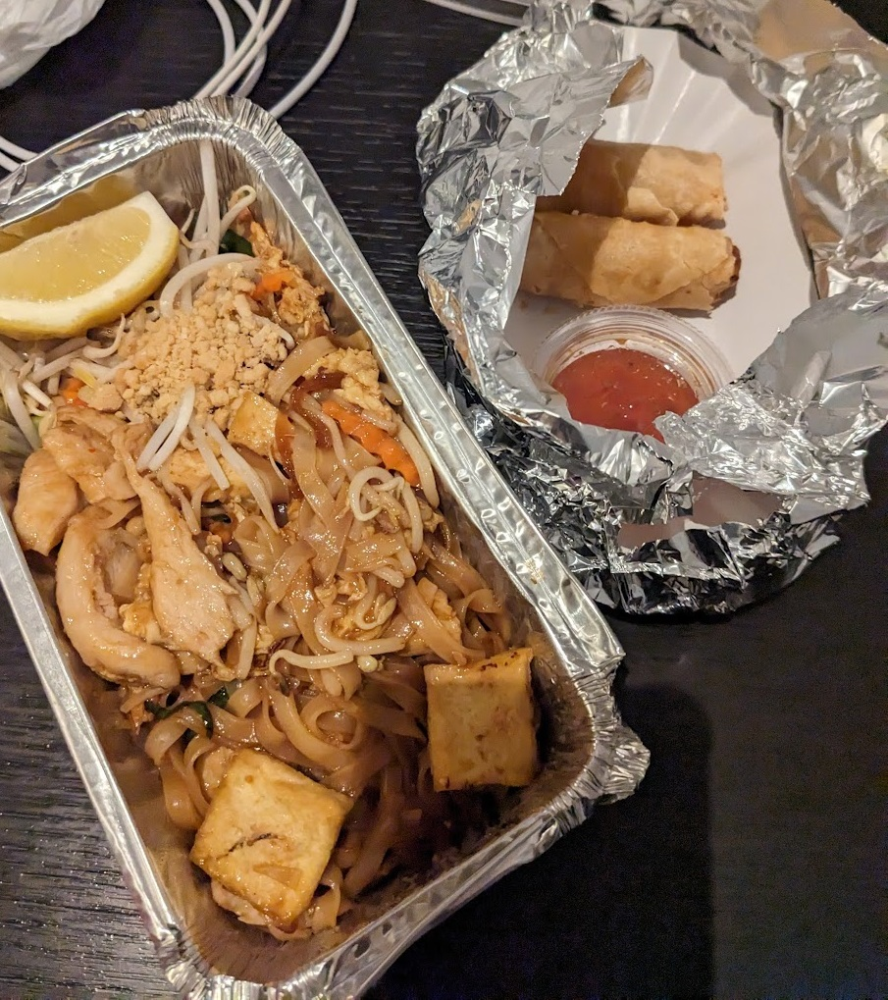
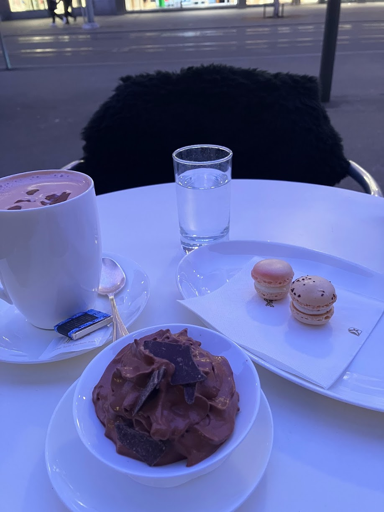
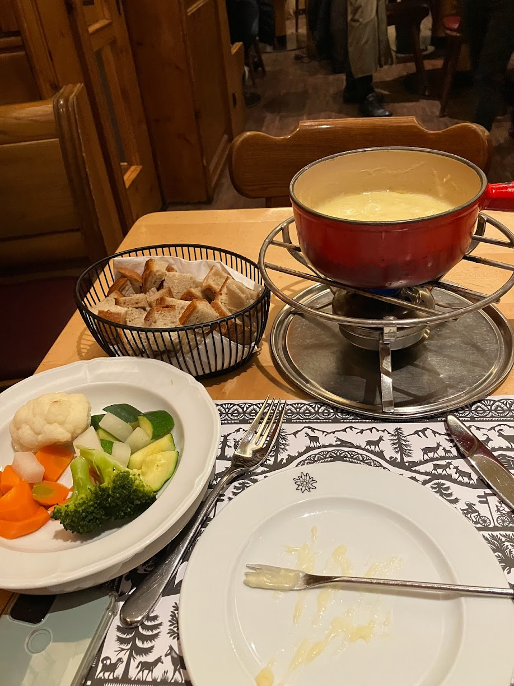

My first intercontinental business trip ever and my first international business trip since my Seattle trip at Zynga!
I stayed a week in the Bahnhofstrasse city area: Flew in Saturday afternoon, worked Monday ~ Friday, and left Saturday morning.

It was my first time flying intercontinental business class since 2000 (when I immigrated to the US as a child), and it was so nice!
 
The office that I went to was pretty barebones, and the work was busy but fun!
In the middle of the workdays, I would duck out to go to Hermes which was 4 minutes walk away, and score a few purchases!
I love traveling alone, but I can never make myself enough excuses to travel alone.
Overall, I prioritized sleep and hydration during the trip, which paid off.
Saturday
I got into hotel from airport by train and walk, explored the luxury shopping area and got burger at Stamped Burger

The smoked swiss burger was very tasty - bread was soft and sweet, meat was juicy, mushroom and cheese were perfect!
Monday
I ran around the old town and went to St. Peter church in the morning, went to work, ate dinner at work, and slept.
Tuesday
I went to a different office to get breakfast, went to work, and went to a bar called Tales Bar after work.
Wednesday

I ran to the lake (South of where I stayed) in the morning, and after work, went to Restaurant Zeughauskeller. At the restaurant I got veal liver and rösti, and flan after dinner.

Thursday
I worked as usual until 9pm, and then got Thai food takeout at Long Huang which was pretty good!

Friday
I ran to the Swiss National Museum in early morning, worked until around 4:30PM, which was too late to go to Chinagarten, which I really wanted to go to, so instead I just hung out at the Old Botanical Garden (beautiful bamboo forest; everything else was dead), got souvenirs and hot chocolate at Sprungli, then had fondue dinner at all alone in the old town at Hotel Adler! T 
At the Sprungli cafe, an guy next to me kept talking to me in Swiss German and English, and kept talking about how Akira Kurosawa is the best filmmaker ever. Apparently, on this trip, I was pretty obviously Japanese; the ladies (originally from Singapore) at Hermes also thought I was Japanese.
I was a little worried about having fondue all by myself, but it wasn’t a problem. The flavor kind of got old so I definitely needed red wine in my meal. The service and atmosphere was great.

Saturday
I went to the airport early to get tax refunds, rested in the Swiss Air lounge and went back home!
On the flight back, I had too many drinks and ended up getting sick…
Zurich was really nice, safe, and diverse culturally (no class diversity though). I would come here for business again!